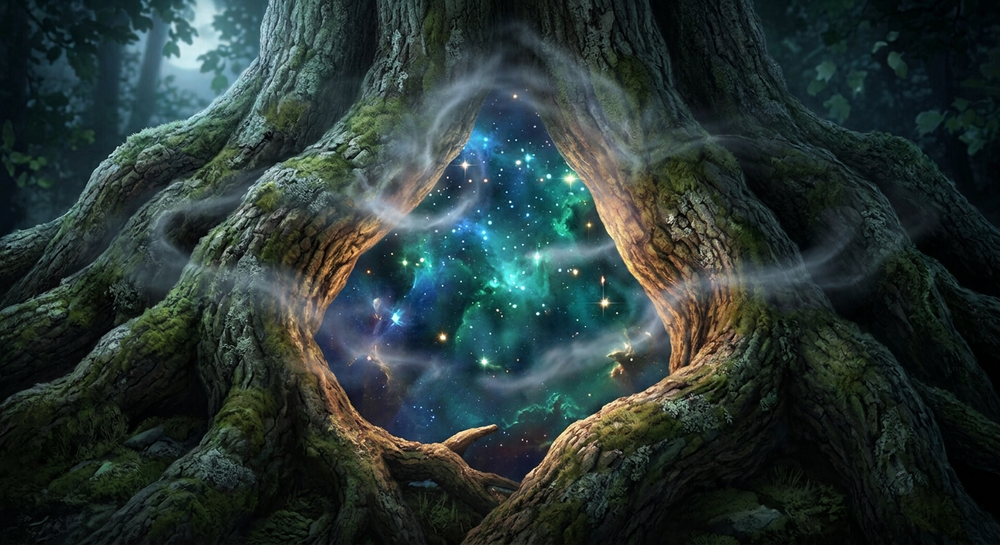

Le symbole semblait presque vivant. Sous la lumière de la lune, les gravures argentées semblaient se déplacer à la surface de la pierre. s'agenouilla. Elle tendit prudemment la main. Puis s'arrêta. Une partie d'elle lui criait de repartir immédiatement. L'autre voulait comprendre.
Pendant plusieurs secondes, elle demeura immobile. Le silence qui régnait autour du vieux chêne était devenu étrange. Trop profond. Trop parfait. Comme si le monde entier avait cessé de respirer.
Finalement, elle effleura la pierre du bout des doigts.
Aussitôt, une lueur argentée parcourut les gravures. Le croissant de lune s'illumina. Puis l'étoile. La lumière se répandit dans les rainures creusées dans la pierre comme de l'eau coulant dans un réseau invisible.
recula brusquement. La pierre vibrait. Très légèrement. Pourtant elle en était certaine. Elle vibrait.
Puis quelque chose apparut. Des mots. D'abord flous. Comme tracés dans une fumée argentée. Puis de plus en plus nets.
Porteuse des Brumes,
le chemin demeure fermé.
Porteuse des Brumes,
retrouve le symbole perdu.
Lorsque le Médaillon retrouvera sa place,
la pierre révèlera le passage.
La lumière s'éteignit aussitôt.
Le silence revint. La pierre redevint froide. Immobile. Comme si rien ne s'était passé.
Mais une chose avait changé. À l'endroit où les mots étaient apparus, une cavité circulaire était désormais visible. Un emplacement vide. Parfaitement rond. Comme s'il attendait un objet précis. Depuis très longtemps.
fixa la pierre. Puis la cavité. Puis le symbole gravé dans la roche. Elle ne comprenait pas encore ce qui se passait. Mais elle savait une chose. Le mystère de la lettre ne faisait que commencer.
